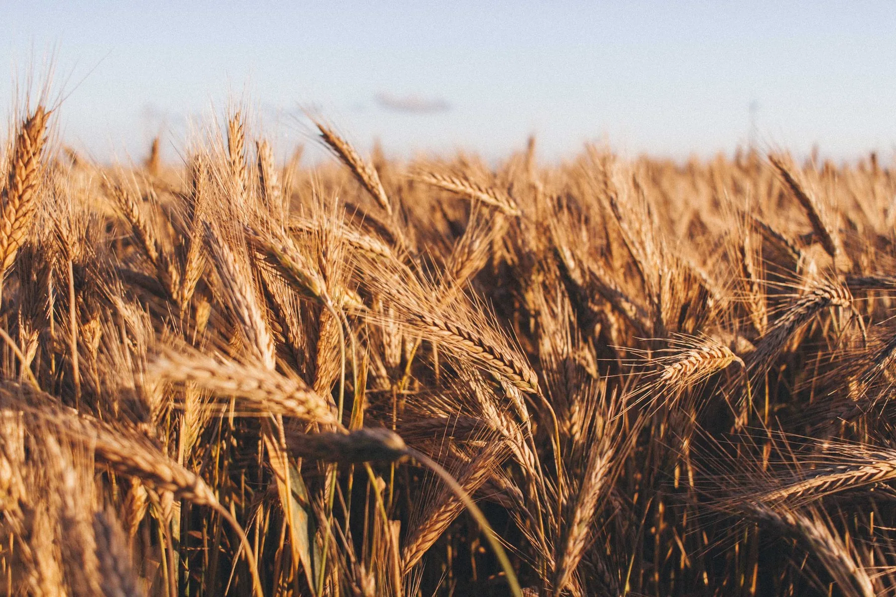
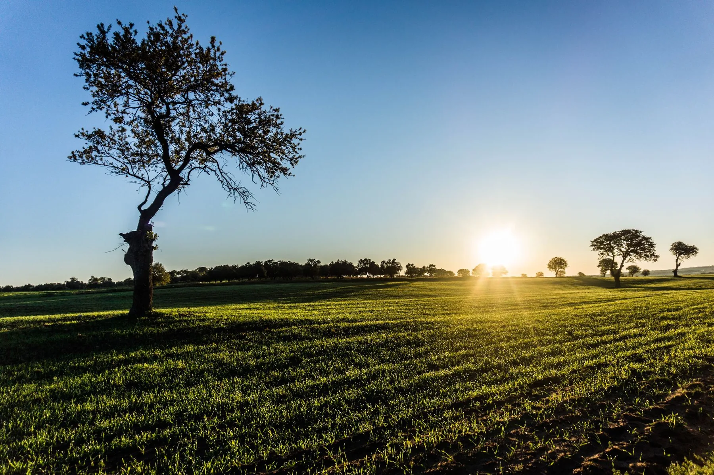
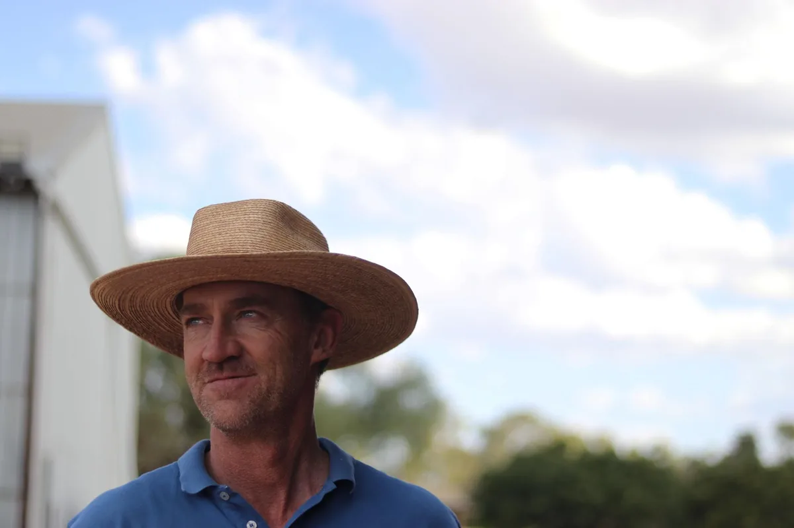

Broadacre & Pasture
We develop prescription blends for the soil and crop in your paddock.

From test results to a prescription blend
Soil and plant test results tell us more when we know what has happened in the paddock. We look at the rotation, previous applications and areas that grow differently, then work through what the next crop needs.
We use that information to recommend a Hybrid-Ag prescription blend that suits the paddock, the season and what is practical with your equipment and budget.
Explore testing and interpretationBroadacre and pasture guides.
What each test can tell you
See what soil, plant, water and produce tests measure, and the limits of each.
Read the testing guide →Sampling records
Record zones and sampling locations so the next result can be compared with the same place.
Read the sampling guide →Water quality
Understand pH, alkalinity, hardness and conductivity, how treatment affects water, and the units used on Australian reports.
Read the water quality guide →Position. Pattern. Plan.
Review the current results and crop history before deciding what to do next.
Read about the approach →
Speak with the Broadacre team.
Bruce Armstrong works across Southern NSW and James White across the North East as part of Hybrid-Ag’s broader agronomy team. They explain the recommendations and work with growers through the season.
Meet the Broadacre teamTalk to us about your paddock.
Tell us what you are growing and share any test results.